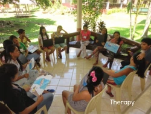

Talikala is an non-profit institution which supports women of all ages who were victims of sexual exploitation. They help these women stand back on their feet, to empower them and help them break free from the chains. This organization was founded on August 7, 1987 by three women, namely: Cindy O'Donnell, an American lay missionary, Elizabeth O' Brien, a Filipina social worker, and Felicidad Prieto, a former nightclub dancer.
The institution's goal back then was to help the exploited women by educating them on the recent HIV/AIDS outbreak at the time (to prevent it from spreading). This goal eventually shifted to freeing the exploited women, helping them in multiple ways such as therapy, consultation, and a lot more.

To also mention, Talikala Inc. is involved with a number of different organizations, all working to help women of all ages.
But, the work is not easy due to the many problems the institution may face (such as problems in finances or even discrimination), Talikala still continues to help women stand up once again.
Directions to Talikala Inc. Office:
1. Turn right onto Davao City Gen. Douglas McArthur Highway then continue onto Elpidio Quirino Avenue. Turn left onto Tionko Avenue, then turn right into Torres St.
2. Follow Panganiban St. to Sputnik St. then turn left at the 2nd cross street onto Panganiban St.
3. Turn left onto Sputnik St. (Talikala will be on your right).